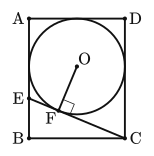
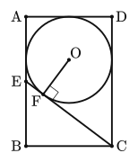
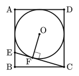

내부 factory10조건 · 공개 생성 보류 · 새 수작업 문항/그림 집계0
case01
직사각형 ABCD의 내부에 있는 원 O는 세 변 DA, AB, CD에 접한다. 변 AB 위의 점 E에서 꼭짓점 C를 이은 선분 EC도 원에 접하며 접점은 F이다. BC=4cm, AE=3cm일 때, 선분 EC의 길이를 구하시오.

내부 해설
5cm
원과 변 DA, AB, CD의 접점을 각각 H, I, G라 하자. 가로 길이가 지름과 같으므로 반지름은 4÷2=2이다. 같은 점에서 원에 그은 두 접선의 길이는 같으므로 AI=AH=2, DG=DH=2이다. 따라서 EI=AE−AI=3−2=1이고 EF=1이다.
CF=CG=x라 하자. CD=x+2이므로 EB=AB−AE=x+2−3=x−1이다. 또 EC=EF+FC=x+1이다. 직각삼각형 EBC에서 (x+1)2=(x−1)2+42이다. 전개하여 정리하면 4x=16이므로 x=4이다.
따라서 EC=4+1=5cm이다. 이때 EB=3>0이고 EF=1>0이므로 분할 선분의 조건을 만족한다. 일차식에서 x가 하나로 정해져 길이도 유일하다.
case02
직사각형 ABCD의 내부에 있는 원 O는 세 변 DA, AB, CD에 접한다. 변 AB 위의 점 E에서 꼭짓점 C를 이은 선분 EC도 원에 접하며 접점은 F이다. BC=8cm, AE=6cm일 때, 선분 EC의 길이를 구하시오.

내부 해설
10cm
원과 변 DA, AB, CD의 접점을 각각 H, I, G라 하자. 가로 길이가 지름과 같으므로 반지름은 8÷2=4이다. 같은 점에서 원에 그은 두 접선의 길이는 같으므로 AI=AH=4, DG=DH=4이다. 따라서 EI=AE−AI=6−4=2이고 EF=2이다.
CF=CG=x라 하자. CD=x+4이므로 EB=AB−AE=x+4−6=x−2이다. 또 EC=EF+FC=x+2이다. 직각삼각형 EBC에서 (x+2)2=(x−2)2+82이다. 전개하여 정리하면 8x=64이므로 x=8이다.
따라서 EC=8+2=10cm이다. 이때 EB=6>0이고 EF=2>0이므로 분할 선분의 조건을 만족한다. 일차식에서 x가 하나로 정해져 길이도 유일하다.
case03
직사각형 ABCD의 내부에 있는 원 O는 세 변 DA, AB, CD에 접한다. 변 AB 위의 점 E에서 꼭짓점 C를 이은 선분 EC도 원에 접하며 접점은 F이다. BC=6cm, AE=4cm일 때, 선분 EC의 길이를 구하시오.

내부 해설
10cm
원과 변 DA, AB, CD의 접점을 각각 H, I, G라 하자. 가로 길이가 지름과 같으므로 반지름은 6÷2=3이다. 같은 점에서 원에 그은 두 접선의 길이는 같으므로 AI=AH=3, DG=DH=3이다. 따라서 EI=AE−AI=4−3=1이고 EF=1이다.
CF=CG=x라 하자. CD=x+3이므로 EB=AB−AE=x+3−4=x−1이다. 또 EC=EF+FC=x+1이다. 직각삼각형 EBC에서 (x+1)2=(x−1)2+62이다. 전개하여 정리하면 4x=36이므로 x=9이다.
따라서 EC=9+1=10cm이다. 이때 EB=8>0이고 EF=1>0이므로 분할 선분의 조건을 만족한다. 일차식에서 x가 하나로 정해져 길이도 유일하다.
case04
직사각형 ABCD의 내부에 있는 원 O는 세 변 DA, AB, CD에 접한다. 변 AB 위의 점 E에서 꼭짓점 C를 이은 선분 EC도 원에 접하며 접점은 F이다. BC=12cm, AE=10cm일 때, 선분 EC의 길이를 구하시오.

내부 해설
13cm
원과 변 DA, AB, CD의 접점을 각각 H, I, G라 하자. 가로 길이가 지름과 같으므로 반지름은 12÷2=6이다. 같은 점에서 원에 그은 두 접선의 길이는 같으므로 AI=AH=6, DG=DH=6이다. 따라서 EI=AE−AI=10−6=4이고 EF=4이다.
CF=CG=x라 하자. CD=x+6이므로 EB=AB−AE=x+6−10=x−4이다. 또 EC=EF+FC=x+4이다. 직각삼각형 EBC에서 (x+4)2=(x−4)2+122이다. 전개하여 정리하면 16x=144이므로 x=9이다.
따라서 EC=9+4=13cm이다. 이때 EB=5>0이고 EF=4>0이므로 분할 선분의 조건을 만족한다. 일차식에서 x가 하나로 정해져 길이도 유일하다.
case05
직사각형 ABCD의 내부에 있는 원 O는 세 변 DA, AB, CD에 접한다. 변 AB 위의 점 E에서 꼭짓점 C를 이은 선분 EC도 원에 접하며 접점은 F이다. BC=12cm, AE=9cm일 때, 선분 EC의 길이를 구하시오.

내부 해설
15cm
원과 변 DA, AB, CD의 접점을 각각 H, I, G라 하자. 가로 길이가 지름과 같으므로 반지름은 12÷2=6이다. 같은 점에서 원에 그은 두 접선의 길이는 같으므로 AI=AH=6, DG=DH=6이다. 따라서 EI=AE−AI=9−6=3이고 EF=3이다.
CF=CG=x라 하자. CD=x+6이므로 EB=AB−AE=x+6−9=x−3이다. 또 EC=EF+FC=x+3이다. 직각삼각형 EBC에서 (x+3)2=(x−3)2+122이다. 전개하여 정리하면 12x=144이므로 x=12이다.
따라서 EC=12+3=15cm이다. 이때 EB=9>0이고 EF=3>0이므로 분할 선분의 조건을 만족한다. 일차식에서 x가 하나로 정해져 길이도 유일하다.
case06
직사각형 ABCD의 내부에 있는 원 O는 세 변 DA, AB, CD에 접한다. 변 AB 위의 점 E에서 꼭짓점 C를 이은 선분 EC도 원에 접하며 접점은 F이다. BC=8cm, AE=5cm일 때, 선분 EC의 길이를 구하시오.

내부 해설
17cm
원과 변 DA, AB, CD의 접점을 각각 H, I, G라 하자. 가로 길이가 지름과 같으므로 반지름은 8÷2=4이다. 같은 점에서 원에 그은 두 접선의 길이는 같으므로 AI=AH=4, DG=DH=4이다. 따라서 EI=AE−AI=5−4=1이고 EF=1이다.
CF=CG=x라 하자. CD=x+4이므로 EB=AB−AE=x+4−5=x−1이다. 또 EC=EF+FC=x+1이다. 직각삼각형 EBC에서 (x+1)2=(x−1)2+82이다. 전개하여 정리하면 4x=64이므로 x=16이다.
따라서 EC=16+1=17cm이다. 이때 EB=15>0이고 EF=1>0이므로 분할 선분의 조건을 만족한다. 일차식에서 x가 하나로 정해져 길이도 유일하다.
case07
직사각형 ABCD의 내부에 있는 원 O는 세 변 DA, AB, CD에 접한다. 변 AB 위의 점 E에서 꼭짓점 C를 이은 선분 EC도 원에 접하며 접점은 F이다. BC=12cm, AE=8cm일 때, 선분 EC의 길이를 구하시오.

내부 해설
20cm
원과 변 DA, AB, CD의 접점을 각각 H, I, G라 하자. 가로 길이가 지름과 같으므로 반지름은 12÷2=6이다. 같은 점에서 원에 그은 두 접선의 길이는 같으므로 AI=AH=6, DG=DH=6이다. 따라서 EI=AE−AI=8−6=2이고 EF=2이다.
CF=CG=x라 하자. CD=x+6이므로 EB=AB−AE=x+6−8=x−2이다. 또 EC=EF+FC=x+2이다. 직각삼각형 EBC에서 (x+2)2=(x−2)2+122이다. 전개하여 정리하면 8x=144이므로 x=18이다.
따라서 EC=18+2=20cm이다. 이때 EB=16>0이고 EF=2>0이므로 분할 선분의 조건을 만족한다. 일차식에서 x가 하나로 정해져 길이도 유일하다.
case08
직사각형 ABCD의 내부에 있는 원 O는 세 변 DA, AB, CD에 접한다. 변 AB 위의 점 E에서 꼭짓점 C를 이은 선분 EC도 원에 접하며 접점은 F이다. BC=16cm, AE=12cm일 때, 선분 EC의 길이를 구하시오.

내부 해설
20cm
원과 변 DA, AB, CD의 접점을 각각 H, I, G라 하자. 가로 길이가 지름과 같으므로 반지름은 16÷2=8이다. 같은 점에서 원에 그은 두 접선의 길이는 같으므로 AI=AH=8, DG=DH=8이다. 따라서 EI=AE−AI=12−8=4이고 EF=4이다.
CF=CG=x라 하자. CD=x+8이므로 EB=AB−AE=x+8−12=x−4이다. 또 EC=EF+FC=x+4이다. 직각삼각형 EBC에서 (x+4)2=(x−4)2+162이다. 전개하여 정리하면 16x=256이므로 x=16이다.
따라서 EC=16+4=20cm이다. 이때 EB=12>0이고 EF=4>0이므로 분할 선분의 조건을 만족한다. 일차식에서 x가 하나로 정해져 길이도 유일하다.
case09
직사각형 ABCD의 내부에 있는 원 O는 세 변 DA, AB, CD에 접한다. 변 AB 위의 점 E에서 꼭짓점 C를 이은 선분 EC도 원에 접하며 접점은 F이다. BC=20cm, AE=15cm일 때, 선분 EC의 길이를 구하시오.

내부 해설
25cm
원과 변 DA, AB, CD의 접점을 각각 H, I, G라 하자. 가로 길이가 지름과 같으므로 반지름은 20÷2=10이다. 같은 점에서 원에 그은 두 접선의 길이는 같으므로 AI=AH=10, DG=DH=10이다. 따라서 EI=AE−AI=15−10=5이고 EF=5이다.
CF=CG=x라 하자. CD=x+10이므로 EB=AB−AE=x+10−15=x−5이다. 또 EC=EF+FC=x+5이다. 직각삼각형 EBC에서 (x+5)2=(x−5)2+202이다. 전개하여 정리하면 20x=400이므로 x=20이다.
따라서 EC=20+5=25cm이다. 이때 EB=15>0이고 EF=5>0이므로 분할 선분의 조건을 만족한다. 일차식에서 x가 하나로 정해져 길이도 유일하다.
case10
직사각형 ABCD의 내부에 있는 원 O는 세 변 DA, AB, CD에 접한다. 변 AB 위의 점 E에서 꼭짓점 C를 이은 선분 EC도 원에 접하며 접점은 F이다. BC=24cm, AE=21cm일 때, 선분 EC의 길이를 구하시오.

내부 해설
25cm
원과 변 DA, AB, CD의 접점을 각각 H, I, G라 하자. 가로 길이가 지름과 같으므로 반지름은 24÷2=12이다. 같은 점에서 원에 그은 두 접선의 길이는 같으므로 AI=AH=12, DG=DH=12이다. 따라서 EI=AE−AI=21−12=9이고 EF=9이다.
CF=CG=x라 하자. CD=x+12이므로 EB=AB−AE=x+12−21=x−9이다. 또 EC=EF+FC=x+9이다. 직각삼각형 EBC에서 (x+9)2=(x−9)2+242이다. 전개하여 정리하면 36x=576이므로 x=16이다.
따라서 EC=16+9=25cm이다. 이때 EB=7>0이고 EF=9>0이므로 분할 선분의 조건을 만족한다. 일차식에서 x가 하나로 정해져 길이도 유일하다.